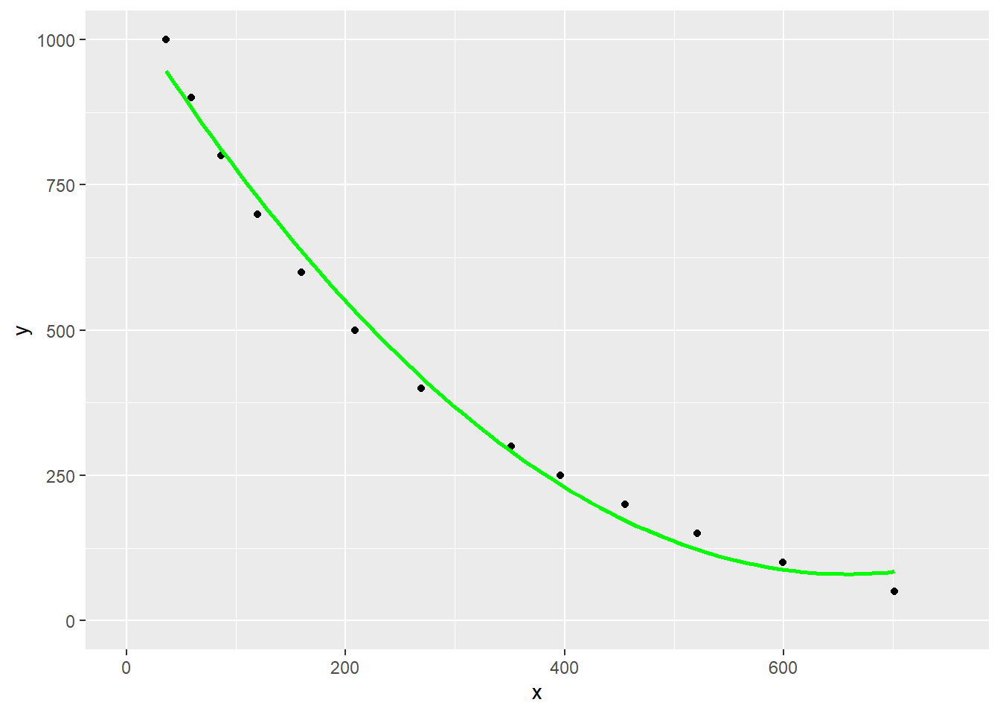

2 Regresjonsmodeller og prediksjonsdata
2.1 Introduksjon / Bakgrunn
Denne oppgaven er delt inn tre separate deler som tar for seg konsepter innenfor analyse av data og regresjon. I del 1 kalkulerer vi laktat terskler, og ser nærmere på reliabiliteten mellom to ulike terskelnivåer. Del 2 bruker vi molekylær data til å predikere størrelsen på DNA-fragment ved hjelp av en veileder. I del 3 skal vi se nærmere på om det finnes en lineær sammenheng mellom to valgte variabler fra datasettet hypertrophyi datapakken exscidata.
2.2 Del 1: Laktat terskler
2.2.1 Introduksjon
Laktat terskel er en variabel som er godt brukt for å forutsi prestasjon innenfor utholdenhets idretter, til å styre intensiteten av treningsøkter og evaluere trenings effekt (Machado et al., 2012). Det finnes ulike metoder for å finne testpersonens laktat terskel. Machado et al. (2012) forteller oss at den “maximal-deviation method” (Dmax) anbefalt av Cheng et al. 1992, bidrar med å kunne evaluere de ulike mekanismene som virker bestemmende for prestasjon innenfor langdistanseløping og sykling (Machado et al., 2012). Videre hadde denne metoden en bedre korrelasjon med prestasjon og laktat terskel sammenliknet med andre metoder. I våres reliabilitets tester ble det ikke utført laktat målinger, på bakgrunn av dette benytter vi oss av data settet til “cyclingstudy”. De representative tersklene som blir undersøkt er 2 mmol L-1 og 4 mmol L-1.
2.2.2 Metode
Som en kan se i den plotta grafen under, er de forskjellige grafene ikke så forskjellige rundt 2mmol og 4mmol L~-1. På den andre siden ser vi at den lineære modellen er feil ved 300w, den sekundærplynomiske modellen er feil ved 275w. Den tredje- og fjerdeplynomiske modellen derimot, varierer ikke mye fra hverandre.
For å finne ut hva forutsatt wattverdi som er nærmest 2 og 4 mmol L-1, benytter vi koden under:
watt predictions
Min. :343 Min. :4
1st Qu.:343 1st Qu.:4
Median :343 Median :4
Mean :343 Mean :4
3rd Qu.:343 3rd Qu.:4
Max. :343 Max. :4 Her finner vi ut av at på 2 mmol får vi en wattverdi på 311 W, mens på 4 mmol får vi en wattverdi på 343 W. Verdien for 2 mmol ligg på samme dataframe som kjem fram på 4 mmol L-1.
2.3 Del 2: Forutsi størrelser på DNA fragmenter eller stiningene i en qPCR-kalibreringskurve
2.3.1 Introduksjon
I denne delen av oppgaven tar vi utgangspunkt i forsøket vi gjorde på molekylærlabben 05. - 06. september, hvor vi ekstraherte DNA fra blod. Videre forsøkte vi å isolere genene som assosieres med hurtig muskelfibersammentrekning (R/R) og langsom muskelfibersammentrekning (X/X) ved hjelp av en PCR-maskin. Prøvene herfra ble testet videre ved hjelp av elektroforese i agarose gel sammen med en DNA-stige (ladder) som brukes som markør for å kartlegge genene. Etter elektroforesene tok vi bilde av preøven slik at vi kunne observere resultatene. Stigen markerer antall hvert fetiende basebar (bp) opp til 300, og hvert 100. basepar videre til 1000bp. det dominante R/R-genet har 413bp og det ressesive X/X-genet har 318bp. De små genmolekylene med få basepar vil trenge lenger in i gelen under elektroforesen, så X/X-genet vil altså trenge lenger inn i gelen ved elektroforese. Dette kan være vanskelig å observere bare med øynene, og vil ikke være særlig nøyaktig. For å få et mer reliabelt resultat har vi derfor brukt følgende metode. Fra prøvene våre var det tre brønner som gav resultat - to med et gen, og en med to (Wackerhage, 2014).
2.3.2 Metode
Først har vi brukt ImageJ Fiji for å behandle bildet vi fikk fra DNA-prøvene. Vi inverterte bildet for å få tydeligere farger, roterte det rett vei og klipte ut delen av bildet vi ville bruke - altså analysen av våre prøver. Videre brukte vi rektangelverktøyet for å markere stigen og prøvene vi ville analysere. Ut fra de markerte områdene lager ImageJ fiji grafer for hver brønn. Vi markerte toppunktene i alle grafene som indikerer gen (og trinn på stigen). Programmet registrerer plasseringen til toppunktene og disse “koordinatene” legges inn i et excel-dokument som vi bruker til beregningene. Vi bruker readxl-pakken for å finne dataene og lagre de som dat.
For å finne ut av molekylstørrelsen til de ukjente prøvene våre må vi først kalibrere stigen. Dette gjør vi ved å lage en data.fram som vi kaller ladder. Her er tallene omvendt proposjonale ettersom det er de små molekylene som trekkes lengst inn i gelen. Denne dataframen kaller vi ladder.
Videre må vi også lage en data.frame for de ukjente variablene som vi kaller “unknown”
For å lage en kalibreringsmodell bruker vi de samme dataene i ggplot for å vise stigen. Dette brukes videre for å estimere størrelsen på de ukjente variablene. Vi valgte å bruke geom_smooth for å lage en bøyd graf (poly) for å få minst mulig avvik.

Til slutt brukte vi log-pakken og exp-pakken for å estimere molekylstørrelsen på genene i prøven vår ut fra datene vi har samlet og grafen over.
Call:
lm(formula = log(mw) ~ dist, data = ladder)
Residuals:
Min 1Q Median 3Q Max
-0.244363 -0.040218 -0.004565 0.082943 0.112630
Coefficients:
Estimate Std. Error t value Pr(>|t|)
(Intercept) 7.0915695 0.0480419 147.61 < 2e-16 ***
dist -0.0041842 0.0001298 -32.23 3.06e-12 ***
---
Signif. codes: 0 '***' 0.001 '**' 0.01 '*' 0.05 '.' 0.1 ' ' 1
Residual standard error: 0.09807 on 11 degrees of freedom
Multiple R-squared: 0.9895, Adjusted R-squared: 0.9886
F-statistic: 1039 on 1 and 11 DF, p-value: 3.059e-12Resultatet fra denne estimeringen var 407.4693586, 400.7064528, 395.7080375, 295.2392074, med residuell standard feil (RSE) på 0,098 og determinasjonskoeffisient (R2) på 0,9886 (98,9 %). I tabellen under vises resultatene fra hver enkelt brønn.
| Brønn | bp |
|---|---|
| 1 | 407 |
| 2 | 401 |
| 3 | 396 og 296 |
2.3.3 Diskusjon
Den lave RSE-verdien vi får her tuder på at det er liten sansynlighet for at det har skjedd store feil i denne analysen. Den høyre R2-verdien tyder samtidig på at estimeringen er god og pålitelig.
Denne analysen viser likevel at ingen av genene våre har helt riktig størelse i forhold til genene vi testet for - R/R (413bp) og X/X (318bp). Selv om vi i nærheten som kan tyde på at allelene for brønn 1 og 2 er R/R og brønn 3 er R/X er det et betydelig avvik. Avviket kan forklares med unøyaktighet under DNA-testen (sansynlig ettersom validitetskontrollen i prøveresultatet ikke kom fram) og med dårlig kvalitet på bildet som vi brukte i denne oppgaven. I rapporten fra forsøket tolket vi prøvene annerledes og trodde at brønn 1, 2 og 3 alle hadde alleler litt over 300bp og at brønn 3 i tillegg hadde en feil med en ukjent allel som var på 250bp. Dette viser at det er mye unæyaktighet ved å bruke kun øynene til å tolke resultatet.
2.4 Del 3: Tolkning av regresjonsmodell
2.4.1 Introduksjon
I denne delen av oppgaven har vi valgt å se nærmere på variablene FAST_NUCLEI_T1 og TRAINING_AGE i datasettet hypertrofi, som er en del av exscidata pakken. For utforming av tabeller, figurer og grafer bruker vi tidyverse, broom og gt.
I ?hypertrofi er FAST_NUCLEI_T1 beskrevet som antall myonuclei per type-II muskelfiber, mens TRAINING_AGE viser til antall år med tidligere treningserfaring. Antall myonuclei per type-II muskelfiber, kan ha noko å si om muskelens egenskap til å utvikle kraft og personers styrke (McArdle et al., 2014, kap 22). Det er også diskutert om trening kan føre til endringer i muskelfiber type eller om de genetiske faktorene er det som er avgjørende for muskelfiber type fordelingen til den enkelte (McArdle et al., 2014 p.s.535). Vi ønsker derfor å se nærmer om det er en lineær sammenheng mellom FAST_NUCLEI_T1 og TRAINING_AGE i datasettet hypertrofi.
Spørsmålet: Er det et lineært forhold mellom myonuclei per fiber CSA i type 2 og treningsalder?
2.4.2 Metode
Under i ?fig-plot-training-age-myonuclei er FAST_NUCLEI_T1 satt som den avhengige variabelen på y-aksen, mens TRAINING_AGE er valgt som den uavhengige variabelen på x-aksen. Grafen er ment for å gi oss et raskt overblikk av dataene.

ved hjelp av geom_smooth har vi lagt inn den best tilpassede linjen til datapunktene, også kalt lineær regresjonslinje (Spiegelhalter, 2019 p.s.128–129). Det gråe området omkring regresjonslinjen, visualiserer konfidensintervallet til linjen. Et bredt konfidensintervall som fremstilt her, indikerer større usikkerhet i hvordan variablene relaterer til hverandre (Spiegelhalter, 2019 p.s.240–244).
For å presentere regresjonslinjen, har vi laget en lineær statistisk modell for hjelp til videre tolkning mellom forholdet av dei to variablene. Oppsummering av de statistiske parametrene som vi har valgt å fokusere på i diskusjonen vår er listet opp i ?tbl-regresjon under.
| Term | Estimert koeffisient | Standardfeil | t-verdi | p-verdi |
|---|---|---|---|---|
| Treningserfaring (år) | −0.008 | 0.077 | −0.104 | 0.918 |
| Notat: p-verdier mindre enn 0.05 anses som statistisk signifikante. | ||||
2.4.3 Diskusjon
I tabellen kan vi lese av verdiene for estimert koeffisient (regresjonskoeffisient), standardfeil, t-verdi og p-verdi. Den estimerte koeffisenten til “Treningserfaring (år)” forteller oss hvor mye FAST_NUCLEI_T1 endres per enhet økning i TRAINING_AGE. I vårt tilfelle ser man en antall nukleikjerner per fiber reduseres med 0.008 per år med treningserfaring.
Standardfeilen måler hvor mye koeffisientene er forventet å variere fra utvalg til utvalg. Standardfeilen som vi har fått er liten i tallverdi, og man kan da fort konkludere at estimeringen er presis grunnet lav standardfeil. Samtidig er det viktig å se standardfeilen i lys av den estimerte koefisienten. I forhold til koeffisienten selv, er standardfeilen stor, og betyr at man burde være usikker på nøyaktigheten til estimatet (Spiegelhalter, 2019 p.s.230–232)
t-verdien sier hvor mange standardavvik den estimerte koeffisienten er fra 0, der jo høyere t-verdien (enten negativ eller positiv), dess mer signifikant er koeffisienten (Spiegelhalter, 2019 p.s.275–276). Hos oss er t-verdien -0.104, noe som indikerer at det ikke er noe signifikant lineær sammenheng mellom FAST_NUCLEI_T1 og TRAINING_AGE.
Nært knyttet til t-verdien, har man p-verdien som hjelper oss å si om t-verdien er statistisk signifikant. P-verdi er sannsynligheten for å observere en så ekstrem teststatistikk som den t-verdien vi har fått, gitt antagelsen at det ikke er en sammenheng mellom variablene våre (Spiegelhalter, 2019 p.s.264–265). Basert på at p-verdien i vår modell er 0.918, er det 91,8 % sannsynlighet at man vil observere en t-verdi på -0.008. Vi har derfor ikkje tilstrekkelig bevis for å kunne si at den uavhengige variabelen TRAINING_AGE har en effekt på den avhengige variabelen FAST_NUCLEI_T1, og at det er en statistik lineær sammenheng mellom variablene (Spiegelhalter, 2019 p.s.265–268).
Selv om p-verdi er et nyttig verktøy for å hjelpe oss å trekke slutninger om koeffisientenes statistiske signifikans, sier den oss ikke noe om størrelsen på en effekt eller hva praktisk betydning den kan ha. Størrelsen på datasettet har også en betydning på p-verdien, der små datasett, som det vi har, kan gi høye p-verdier selv om det er en betydelig effekt (Spiegelhalter, 2019 p.s.285)
Machado FA, Nakamura FY & Moraes SMFD (2012). Influence of regression model and incremental test protocol on the relationship between lactate threshold using the maximal-deviation method and performance in female runners. Journal of sports sciences 30, 1267–1274.
McArdle WD, Katch FI & Katch VL (2014). Exercise physiology: Nutrition, energy, and human performance, 8th edn. Wolters Kluwer Health.
Spiegelhalter DJ (2019). The art of statistics : Learning from data, 1th edn. Pelican.
Wackerhage H (2014). Molecular exercise physiology - an introduction, 1rst edn. Routledge.